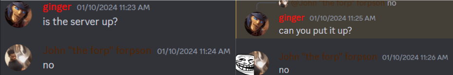
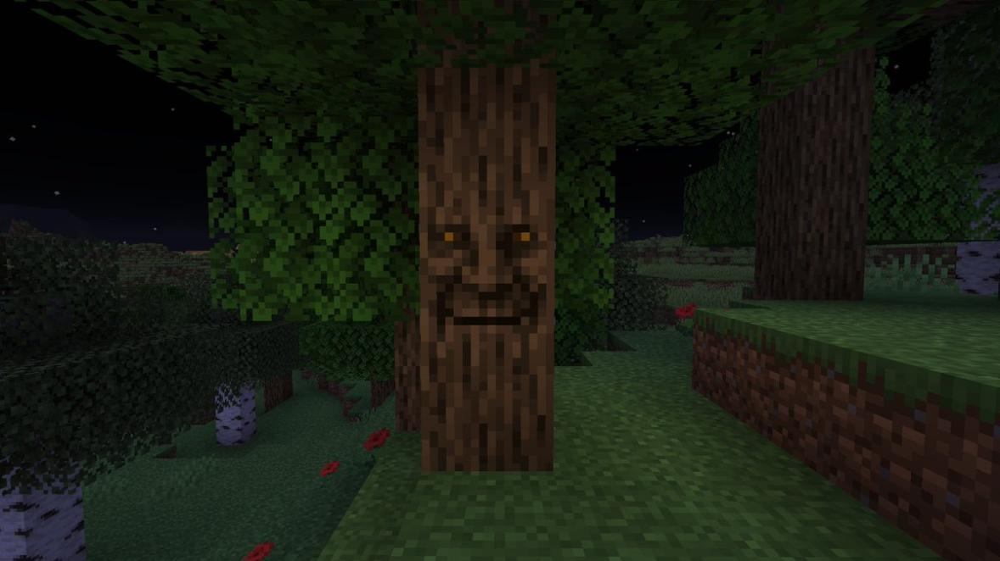

alright losers, lets do this one last time
we now have yet another games club mincraft server!
but why, you may ask?
because my server is cool and based instead of marek's uncool and cringe server
up 24/7!!! no more waiting!!!

COOL mods with a sense of PROGRESSION unlike mareks STUPID DO-NOTHING mods
what do i mean by """"COOL""""? I"M GLAD YOU ASKED!!
ingame PROXIMITY VOICE CHAT!! no more having to coordinate discord calls that dissolve into chaos immediately!!!!
tired of WALKING places? try a PLANE or get around quickly with a WAYSTONE
create mod... ig... if youre into that... :/
like 30 BILLION NEW BIOMES and MOBS and STRUCTURES and VILLAGES and WEAPONS and ARMORS and MINOR IMPROVEMENTS
have i mentioned GAMBLING????
hosted on version 1.18.2 (the superior version) BUT DONT WORRY -
the deep dark and mangrove swamps have been BACKPORTED for all your deep
dark/mangrove swamp needs
theres this cool new forest in the TWILIGHT you can go to... also you might be able to TINKER with some CONSTRUCTS...

with naturally spawning charged creepers, various minibosses across the map, and INFERNAL MOBS, the game poses some semblance of a challenge!!
I DONT KNOW WHAT HALF OF THESE EVN DO SO YOULL HAVE TO FIND OUT FOR YOURSELF WONT YOU
to play on this EPIC SERVER that DEFINITELY WILL NOT DIE WITHIN WEEKS,
all you have to do is install FORGE 1.18.2 - 40.2.21
and the EPIC MODPACK that is definitely not a zip bomb then connect to minecraft.gameing.games !!!1!